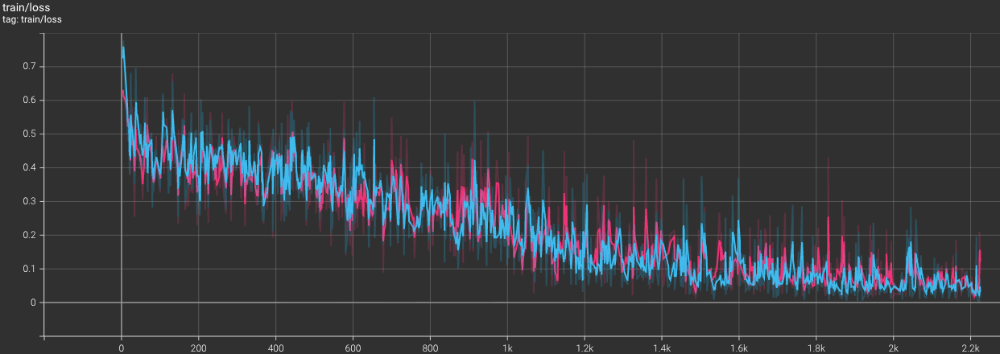

LightRFT Reward Model 训练最佳实践指南¶
目录¶
概述
Reward Model 类型
环境准备
模型训练
模型评估
常见问题
基准测试与性能参考
进阶话题
参考资源
1. 概述¶
1.1 什么是 Reward Model¶
在基于人类反馈的强化学习 (Reinforcement Learning from Human Feedback, RLHF) 的流程中，Reward Model 扮演着人类偏好代理的关键角色。
为什么需要 Reward Model？ 在许多复杂的任务场景中，我们面临着奖励函数难以显式用简单的规则定义的挑战。例如：
生成任务：如何用公式衡量一段文本的文采、一张图像的美感？
交互与控制：如何定义驾驶的舒适程度、或者机器人动作的自然度？
虽然人类可以对这些结果进行主观评判，但在大规模训练中实时获取人工反馈既昂贵又耗时。因此，我们需要训练一个 Reward Model 来模拟人类的判断标准。
Reward Model 的作用 Reward Model 接收一个输入（如 Prompt 或环境状态）及其对应的输出（Response 或动作），并输出一个评价信号。这个信号量化了结果在多大程度上符合人类的期望（如有用性、安全性、真实性等），从而为策略模型（Policy Model）的优化提供可扩展的、一致的反馈指导。
根据输出形式的不同，Reward Model 主要分为两类：
Scalar Reward Model (SRM): 这是最经典的奖励模型形式。它将输入和响应映射为一个单一的标量分数（Scalar Score）。SRM 的优势在于计算效率高，且输出的数值信号可以直接作为强化学习算法（如 PPO）中的 Reward，或者用于 Rejection Sampling。然而，单一的标量往往难以解释模型打分的依据，也难以捕捉复杂的多维度偏好。
Generative Reward Model (GRM): 这是一种新兴的奖励模型范式。GRM 利用大语言模型的生成能力，以自然语言的形式输出评价。它不仅能给出最终的判断（如“回答 A 更好”），还能生成详细的思维链（Chain-of-Thought, CoT）来解释评价理由。GRM 具有更强的可解释性，并且通过模拟人类的推理过程，往往能在复杂的评估任务中展现出更高的准确性。
Reward Model 给出的奖励信号（无论是标量还是基于文本解析出的结果）将用于指导 Policy Model（策略模型）的优化。通过最大化 RM 给出的奖励，Policy Model 能够学习生成更符合人类偏好和价值观的内容。因此，Reward Model 的质量直接决定了最终模型的对齐效果，是对齐大模型生成行为与人类偏好的关键桥梁。
1.2 LightRFT 中的 RM 支持¶
LightRFT 提供了完整的多模态奖励模型训练框架，支持：
模型类型：
Scalar Reward Model (SRM): 标量奖励模型，输出标量分数（0-1 之间）
Generative Reward Model (GRM): 生成式的奖励模型，生成带推理过程（CoT）与最终结论的文本式评估（如
… … ），具有更好的可解释性。
支持的模态：
Vision-Language (VL): 图像-文本、视频-文本
Audio-Language (AL): 音频-文本
Language-Only: 纯文本，即现有的 LLM 模型
训练后端：
DeepSpeed ZeRO (Stage 1/2/3)
2. Reward Model 类型¶
2.1 Scalar Reward Model (SRM)¶
特点¶
输出单一标量分数（通过 Sigmoid 映射到 0-1）
训练使用成对偏好数据（Pairwise Preference）
支持多个 reward head（如 preference, alignment, helpfulness）
适用场景¶
需要快速推理的场景
作为 PPO/GRPO 等 RL 算法的奖励信号
多维度偏好建模
损失函数¶
Bradley-Terry Loss (Log-Sigmoid):
-log(σ(r_chosen - r_reject - margin))LogExp Loss:
log(1 + exp(r_reject - r_chosen))HPS Scale Loss: Cross-entropy with learnable temperature (在我们的实验中表现更优)
架构¶
Backbone (e.g. Vision-Language Model)
↓
Hidden States (from probing_layer)
↓
Pooling (Attention or Last Token)
↓
Reward Head (MLP + Sigmoid)
↓
Scalar Score (0-1)
2.2 Generative Reward Model (GRM)¶
特点¶
生成文本形式的评价和理由
训练使用标准语言模型损失 (Next-Token Prediction)
可解释性强
适用场景¶
需要提供评价理由的场景
复杂任务的细粒度评估
研究和分析模型行为
训练方式¶
GPT-LM Loss: 标准的 next-token prediction loss
强化微调（Reinforcement Fine-Tuning, RFT）： 使用强化学习的方式训练，以提高 GRM 的推理能力。在 LightRFT 中该模块还在开发中，敬请期待。
架构¶
Multi-modal Encoder (e.g. Vision2Seq Model)
↓
LLM Decoder
↓
Generated Text (Reward Description)
2.3 选择建议¶
场景 |
推荐类型 |
原因 |
|---|---|---|
PPO/DPO 训练 |
SRM |
推理速度快，标量信号易于使用 |
复杂任务评估 |
GRM |
可以生成详细的评价理由 |
多维度偏好 |
SRM/GRM (多 head) |
可以同时训练多个维度 |
可解释性要求高 |
GRM |
提供文本解释 |
实时应用 |
SRM |
推理开销小 |
3. 环境准备¶
3.1 依赖安装¶
cd LightRFT
# 安装基础依赖
pip install -r requirements.txt
# 对于视觉语言模型
pip install qwen-vl-utils # Qwen-VL 系列
pip install keye-vl-utils # KeyeVL 系列
# 对于音频语言模型
pip install librosa
3.2 GPU 要求¶
最低配置：
SRM (3B 模型, 全量微调): 1x H200/A100 (80GB)
SRM (7B 模型): 1x H200 with ZeRO-3
GRM (3B 模型): 1x H200 with ZeRO-3
GRM (7B 模型): 2x H200 with ZeRO-3
推荐配置：
8x A100 (80GB) for 7B-72B models
使用 ZeRO-3 + LoRA for larger models
4. 模型训练¶
LightRFT 提供了开箱即用的训练脚本，支持 SRM 和 GRM 的训练。 我们已经为常见场景准备好可直接运行的脚本与默认配置，开箱即用；同时也支持按需修改参数以适配你的实验。
4.0 一键运行（SRM / GRM）¶
快速开始：按需修改脚本中的数据路径与保存目录后直接运行。
# 首先进入 LightRFT 根目录
cd LightRFT
# 训练 Vision-Language 模型的 SRM
bash examples/srm_training/run_srm_vl.sh
# 训练 Audio-Language 模型的 SRM
bash examples/srm_training/run_srm_al.sh
# 训练 Vision-Language 模型的 GRM
bash examples/srm_training/run_grm_vl.sh
说明：
脚本已内置推荐配置。
支持单机多卡运行，默认使用 torchrun 启动；如需分布式多机，请在脚本顶部按注释设置 NNODES、MASTER_ADDR/PORT 等环境变量。
以下是基于我们实验设置的详细命令与关键参数说明。
4.1 训练 Scalar Reward Model (SRM)¶
4.1.1 基础训练脚本 (基于 T2I 实验)¶
#!/bin/bash
# 设置环境变量
export GPUS_PER_NODE= 2 # 每个节点的 GPU 数量
export NNODES=1 # 节点数量
export NODE_RANK=0 # 当前节点的 rank
export MASTER_ADDR=127.0.0.1 # 主节点地址
export MASTER_PORT=29500 # 主节点端口
# 训练参数
PRETRAIN="Qwen/Qwen2.5-VL-3B"
# 使用 HPDv3 训练集 和 测试集
TRAIN_DATA="/path/to/hpdv3/train.json"
EVAL_DATA="/path/to/hpdv3/test.json"
SAVE_PATH="./checkpoints/srm_qwen2.5vl_3b_hpdv3"
# 设置 Task Instruncion
TASK_INSTRUCTION="Your will act as an expert image evaluator for text-to-image generation.
Given a text prompt and a generated image, your task is to assess the overall quality of the image in relation to the prompt.
Your evaluation should focus on the following key aspects:
• Preference: Which image would a human viewer find more satisfying or visually appealing overall.
• Alignment: How well the image content matches the given text prompt in semantics, objects, and attributes.
Your task is provided in the following, please give your judgement based on above criteria.
The prompt used for generation is as follows: {prompt}.
"
# 启动训练
set -x
torchrun --nnodes $NNODES --nproc-per-node $GPUS_PER_NODE --node_rank $NODE_RANK --master-port $MASTER_PORT --master-addr $MASTER_ADDR \
examples/demo_srm_training/train_srm_vl.py \
--pretrain $PRETRAIN \
--train_data $TRAIN_DATA \
--save_path $SAVE_PATH \
--ckpt_path $SAVE_PATH \
--train_batch_size 32 \
--micro_train_batch_size 2 \
--max_epochs 5 \
--actor_learning_rate 1e-5 \
--lr_warmup_ratio 0.05 \
--prompt_max_len 2048 \
--pooling_method attn \
--probing_layer -1 \
--heads_types preference \
--scale_for_train \
--margin 0.1 \
--task_instruction "$TASK_INSTRUCTION" \
--loss_type hps \
--zero_stage 2 \
--bf16 \
--flash_attn \
--gradient_checkpointing \
--logging_steps 1 \
--save_steps 100 \
--use_wandb "your_wandb_key" \
--wandb_project "reward_model_training"
4.1.2 关键参数说明¶
模型参数：
--pretrain: 预训练模型路径。实验中使用Qwen/Qwen2.5-VL-3B。--pooling_method:attn: 使用 attention pooling（实验中使用，推荐）。last: 使用最后一个 token。
--probing_layer: 从哪一层提取特征作为 reward head 的输入。-1: 最后一层（实验中使用，默认）。17: 第 17 层（可作为变体尝试）。
--heads_types: reward head 类型，默认只使用preference。 可以设置为多个维度，如preference alignment coherence。 但需要确保数据中包含对应的标签。
训练参数：
--train_batch_size: 全局 batch size。T2I 实验设为32，T2V 实验设为8。--micro_train_batch_size: 每个 GPU 的 batch size。--actor_learning_rate: 学习率。实验中全量微调使用1e-5。--video_fps: 视频数据的采样帧率，T2V 实验中设为2.0。--scale_for_train: 在训练过程中启用可学习的缩放系数 (learnable scaling factor)。--margin: 在 BT Loss 中使用的 margin 值，HPS 和 LogExp 中无效。
Prompt 相关：
--task_instruction: 任务指令，用于指导奖励模型理解评价标准。实验中 T2I 设为上述示例内容。
训练记录： LightRFT 支持多种训练日志记录方式：
--use_wandb: 启用 Weights & Biases 进行训练日志记录。--use_tensorboard: 启用 TensorBoard 进行训练日志记录并保存到指定路径。 可通过加入 –use_tensorboard “path/to/logs” 启用。
损失函数：
--loss_type:hps: 使用 HPS Scale Loss（实验中使用，默认）。sigmoid: 使用 BT (Bradley-Terry) Loss。logexp: 使用 LogExp Loss。
4.1.3 LoRA 训练¶
对于大模型（> 7B）或显存受限情况，推荐使用 LoRA：
python examples/demo_srm_training/train_srm.py \
--pretrain "Qwen/Qwen2.5-VL-72B-Instruct" \
... \
--lora_rank 64 \
--lora_alpha 128 \
--lora_dropout 0.1 \
--target_modules all-linear \
--zero_stage 2
4.2 训练 Generative Reward Model (GRM)¶
4.2.1 基础训练脚本 (基于 T2I 实验)¶
#!/bin/bash
PRETRAIN="Qwen/Qwen2.5-VL-3B"
TRAIN_DATA="/path/to/ImageGen-CoT-Reward-5K.json"
SAVE_PATH="./checkpoints/grm_qwen2.5vl_3b"
torchrun --nnodes $NNODES --nproc-per-node $GPUS_PER_NODE --node_rank $NODE_RANK --master-port $MASTER_PORT --master-addr $MASTER_ADDR \
examples/demo_grm_training/train_grm_vl.py \
--pretrain $PRETRAIN \
--train_data $TRAIN_DATA \
--save_path $SAVE_PATH \
--ckpt_path $SAVE_PATH \
--train_batch_size 4 \
--micro_train_batch_size 1 \
--max_epochs 2 \
--actor_learning_rate 1e-5 \
--prompt_max_len 4096 \
--zero_stage 2 \
--bf16 \
--flash_attn \
--gradient_checkpointing \
--logging_steps 10 \
--save_steps 500
注意事项：
GRM 通常需要更长的序列长度 (
--prompt_max_len 4096) 以容纳 CoT 文本。由于序列长，batch size 需相应减小，实验中使用
4。学习率与 SRM 实验保持一致 (
1e-5)。
5. 模型评估¶
5.1 模型转换¶
我们的训练脚本默认使用 DeepSpeed ZeRO 作为训练引擎，训练中途会保存 DeepSpeed 格式的 checkpoint，因此需要将其转换为标准的 HuggingFace 格式以便进行推理和评估。
对于 SRM 模型，我们推荐使用以下脚本进行转换：
python examples/ckpt_scripts/ds2hf.py \
--hf_base /path/to/base/model \
--model_type srm_vl \
--checkpoint_dir /path/to/deepspeed/checkpoint/dir \
--output_dir /path/to/output/huggingface/output/dir \
--scale_for_train \
--pooling_method attn \
--heads_types preference
对于 GRM 模型，可以使用以下脚本进行转换：
python examples/ckpt_scripts/ds2hf.py \
--hf_base /path/to/base/model \
--model_type grm \
--checkpoint_dir /path/to/deepspeed/checkpoint/dir \
--output_dir /path/to/output/huggingface/output/dir
5.2 评估数据准备¶
评估数据格式与训练数据相同，但应为独立的测试集。
实验中使用的评估集：
Text-to-Image (T2I) 任务
OmniReward-Bench-T2IHPDv3 Test SetImageRewardDB Test SetGenAI-Bench
Text-to-Video (T2V) 任务
OmniReward-Bench-T2V
Text-to-Audio (T2A) 任务
OmniReward-Bench-T2A
5.3 评估脚本示例¶
我们在 examples/demo_srm_training 和 examples/demo_grm_training 目录下提供了评估脚本 test_srm_vl.py 和 test_grm_vl.py，分别用于 SRM 和 GRM 的评测。评估脚本中为不同的 benchmark 实现相应的 Evaluator 类。支持实现自定义的 Evaluator 以适应新的评估需求。
另外，也支持在训练脚本中指定评估数据，实现训练过程中的定期评估:
--eval_data "/path/to/your/eval.json" \
--eval_steps 100 # 每 100 步评估一次
启用后，训练过程中会在指定步数进行进行评估，并将结果记录到 save_path 下的 jsonl 文件中。
5.4 评估指标¶
5.4.1 SRM 评估¶
Accuracy: chosen 样本得分 > reject 样本的比例。这是我们实验中的核心指标。
Mean Reward Gap:
mean(score_chosen - score_reject)。Score Distribution: 分析模型对 chosen/rejected 样本的打分分布。
5.4.2 GRM 评估¶
Ranking Accuracy: 通过解析生成文本中的
<answer>标签，计算其与真实偏好的一致性。
5.5 基准测试¶
我们基于 Qwen2.5-VL-3B 模型进行了一系列基准测试。详细的设置和结果请参考 章节 7: 基准测试与性能参考。
6. 常见问题¶
6.1 训练问题¶
Q1: OOM (Out of Memory)¶
解决方案：
减小 batch size:
--micro_train_batch_size 1。启用 gradient checkpointing:
--gradient_checkpointing。使用更高的 ZeRO stage:
--zero_stage 3 --adam_offload。使用 LoRA:
--lora_rank 32。减小序列长度:
--prompt_max_len 1024。使用 BF16/FP16:
--bf16。
Q2: 训练不稳定/Loss 不下降¶
可能原因和解决方案：
学习率不合适： 对于全量微调，
1e-5是一个较好的起点。如果模型更大或数据更少，可尝试5e-6或1e-6。数据问题： 检查数据清洗步骤是否到位，标签是否准确。
梯度爆炸： 尝试添加梯度裁剪。
Warmup 不足： 确保
--lr_warmup_ratio设置合理（如0.05）。
6.2 推理问题¶
Q3: 如何使用训练好的模型进行推理¶
我们在 examples/demo_srm_training/srm_vl_inference.py 和 examples/demo_grm_training/grm_vl_inference.py 提供了 SRM 和 GRM 的推理脚本示例。
请参考脚本中的用法说明，按需修改模型路径和输入数据，即可进行推理。
6.3 数据集问题¶
Q4: 如何使用自己的数据集进行训练¶
LightRFT 使用 Data Handler 模式，通过为不同数据集实现相应的 Data Handler 类来支持多种数据集，从而实现灵活的数据加载与预处理。
实现自定义的 Data Handler¶
继承 BaseDataHandler: 创建一个新的 Python 类，继承自
lightrft.datasets.BaseDataHandler。实现必要的方法:
load_data: 从数据配置文件（如 json, parquet等）或 文件夹 中加载所有数据项。返回原始数据项的列表。get_media_info: 从原始数据项中提取所有媒体信息（图片，视频 和 音频等）的路径信息。parse_item: 将原始数据项和加载的视觉内容解析为适合模型输入的标准格式，并返回包含标签等其他必要信息的字典。
注册 Data Handler: 在
lightrft.datasets模块的srm_datset或者grm_dataset中的self.handlers字典中注册你的 Data Handler 类。
数据格式¶
SRM 数据格式¶
一个典型的格式示例 (JSON Lines):
{
"prompt": "A beautiful sunset over the ocean",
"image_0": "/path/to/image0.jpg",
"image_1": "/path/to/image1.jpg",
"preference": "A",
"alignment": "B"
}
标签说明： 我们使用如下所示的标签进行偏好训练。
"A": image_0/response_0 更好"B": image_1/response_1 更好"C": 两者相当
GRM 数据格式¶
GRM 的训练数据需要包含模型生成的文本评价，通常包含思维链和最终结论，以便基于 Next-Token Prediction 进行有监督微调训练。
一个数据格式示例 (JSON Lines):
{
"prompt": "Describe this image",
"image_0": "/path/to/image0.jpg",
"image_1": "/path/to/image1.jpg",
"response": "<think>Reasoning here</think><answer>Image 1 is better</answer>"
}
通常，response 中包含 <think> 和 <answer> 标签，用于训练模型生成结构化的评价和最终判断，同时方便进行文本解析。
您也可以根据需要设计不同的标签体系。
数据集组织¶
推荐目录结构：
/data/reward_model/
├── datasets/
│ ├── HPDv3/
│ │ ├── train.json
│ │ ├── test.json
│ │ └── images/
│ │ ├── img_001.jpg
│ │ ├── img_002.jpg
│ │ └── ...
│ │
│ ├── ImageGen-CoT-Reward-5K/
│ │ ├── train.json
│ │ └── images/
│ │ ├── img_001.jpg
│ │ ├── img_002.jpg
│ │ └── ...
│ │
│ ├── rapidata-text-2-video-human-preferences-pika2.2/
│ │ ├── train.parquet
│ │ └── videos/
│ │ ├── vid_001.mp4
│ │ ├── vid_002.mp4
│ │ └── ...
│ │
└── ...
数据预处理¶
视觉数据预处理¶
图像应该存储为 JPEG/PNG/webp 格式
建议分辨率: 224x224 到 1024x1024
视频帧率: 实验中设置为 2.0 FPS (在配置中通过 –fps 指定)
数据清洗¶
必须检查：
✅ 所有文件路径是否存在
✅ 标签是否合法 (A/B/C)
✅ 图像是否可读
✅ 文本是否包含特殊字符
示例脚本：
import json
from pathlib import Path
from PIL import Image
def validate_dataset(json_path):
with open(json_path) as f:
for line_no, line in enumerate(f, 1):
item = json.loads(line)
# 根据你的数据格式进行检查...
# ...
7. 基准测试与性能参考¶
本章节提供了基于 LightRFT 框架的 SRM 和 GRM 模型的初步实验结果，可作为训练的性能参考。
7.1 Scalar Reward Model (SRM) 实验¶
7.1.2 Text-to-Image (T2I) 任务性能¶
实验设置
基础模型:
Qwen2.5-VL-3B训练方式: 全量微调 (Full fine-tuning)
Batch Size: 全局 Batch Size
32，每卡 Micro Batch Size4最大训练轮数: 所有实验均训练
5个 Epoch。我们取 2000 global step 的检查点进行评估。学习率:
1e-5Reward Head: 单一 Preference Head，输出整体偏好分数
硬件: 双卡 NVIDIA H200 (140GBx2)
任务指令:
Your will act as an expert image evaluator for text-to-image generation. Given a text prompt and a generated image, your task is to assess the overall quality of the image in relation to the prompt. Your evaluation should focus on the following key aspects: • Preference: Which image would a human viewer find more satisfying or visually appealing overall. • Alignment: How well the image content matches the given text prompt in semantics, objects, and attributes. Your task is provided in the following, please give your judgement based on above criteria. The prompt used for generation is as follows: {prompt}.
训练数据:
HPDv3 Subset: 从 HPDv3-Train 中随机抽取的约 ~57K 样本对。原始的 HPDv3 包含约 1.17M 样本对，考虑到资源限制，我们使用了一个子集进行训练。
评估数据:
OmniReward-Bench-T2I: OmniReward-Bench 中的 Text-to-Image 评估子集。
HPDv3 Test Set: HPDv3 数据集的测试集部分。
ImageRewardDB Test Set: ImageRewardDB 数据集的测试集部分。
测试结果:
模型变体 |
损失函数 |
Scale for Train |
Pooling Method |
Probing Layer |
OmniReward-Bench-T2I (Acc) |
HPDv3 Test (Acc) |
ImageRewardDB (Acc) |
|---|---|---|---|---|---|---|---|
HPS |
HPS |
No |
attn |
-1 |
31.83% |
53.84% |
41.93% |
BT |
BT |
No |
attn |
-1 |
30.06% |
60.54% |
42.51% |
BT Scale |
BT |
Yes |
attn |
-1 |
53.83% |
69.74% |
58.98% |
HPS Scale |
HPS |
Yes |
attn |
-1 |
55.21% |
72.35% |
61.37% |
HPS + BT Scale |
HPS + BT |
Yes |
attn |
-1 |
56.19% |
68.86% |
59.48% |
HPS Scale Probing 17 |
HPS + BT |
Yes |
attn |
17 |
55.21% |
71.4% |
57.37% |
HPS Scale Last |
HPS + BT |
Yes |
last |
-1 |
48.92% |
70.10% |
59.12% |
— |
— |
— |
— |
— |
— |
— |
— |
Baseline: HPSv3 (Qwen2VL-7B) |
- |
- |
- |
- |
76.9% |
66.8% |
- |
Baseline: ImageReward (BLIP) |
- |
- |
- |
- |
58.6% |
65.1% |
- |
训练日志:
使用不同损失函数进行训练的对比:
HPS Loss (红线) vs. BT (灰线) vs. HPS Scale (浅蓝线) vs. BT Scale (深蓝线)


观察:
对于 HPS 和 BT 两种损失函数，启用可学习的缩放系数（Scale for Train）显著提升了训练稳定性和最终性能。
在启用 Scale for Train 的情况下，HPS 和 BT 两者的损失函数曲线基本一致，但在评估准确率上，HPS 加上 Scale 显著优于 BT。
Pooling 方法对比:
我们在 HPS Scale 的配置上对不同的 Pooling 方法进行了对比实验。
Attention Pooling (浅蓝线) vs. Last Token Pooling (粉红线) 
观察: 从训练的损失曲线上看，两种 pooling 方法的收敛速度相似，但在评估准确率上，Attention Pooling 明显优于 Last Token Pooling。
Probing Layer 对比:
我们在 HPS Scale 的配置上对不同的 Probing Layer 进行了对比实验。 使用最后一层 (浅蓝线) vs. 中间层 17 (橙线)

观察: 两种 Probing Layer 的训练损失曲线均较为接近。但在评估准确率上，使用最后一层的特征优于中间层。
分数分布:
我们可视化了不同模型在在 OmniReward-Bench-T2I 和 HPDv3 Test 数据集上的分数分布情况。可以比较明显地的看到，在不启用 Scale for Train 的情况下，模型倾向于给出极端的分数（接近 0 或 1），而在启用 Scale for Train 后，样本的分数的分布更加均匀，
HPDv3 Test 数据集上的分数分布图:
OmniReward-Bench-T2I 数据集上的分数分布图:


结论与分析:
损失函数选择: 在 T2I 任务上，BT Loss 明显好于 HPS Loss。 使用可学习温度缩放的 BT Loss（BT Scale）进一步提升了性能。而结合 HPS 和 BT 的混合损失（HPS + BT Scale）在 OmniReward-Bench-T2I 上取得了最佳结果（56.39%）。
可学习的缩放系数: 启用
Scale for Train（可学习的缩放系数）显著提升了模型性能，表明动态调整奖励分数的分布对于训练更有效的奖励模型至关重要。其中， HPS Loss 在启用缩放后提升尤为显著，在 HPDv3 Test 和 ImageRewardDB 上分别达到了 72.35% 和 61.37% 的准确率。Pooling 方法: Attention Pooling 明显优于 Last Token Pooling，表明将整个序列的 token 进行加权聚合有助于提升奖励模型的判别能力。
Probing Layer 选择: 使用最后一层（-1）和 中间层（17）的特征作为奖励头的输入，结果表明两者的结果相近，但最后一层略优。
性能对比: 我们的 3B 模型在 HPS Scale 的配置下， 仅在从 HPDv3 中抽取得到的一个小子集数据上训练后，就能在 HPDv3 Test 和 ImageRewardDB 上分别达到 72.35% 和 61.37% 的准确率，接近此前基于 7B 模型的 SOTA 结果（分别为 76.9% 和 66.8%）。这表明 LightRFT 框架在训练高效且性能优异的奖励模型方面具有显著优势。
7.1.3 Text-to-Audio (T2A) 任务性能¶
我们使用 T2I 任务中表现最优的 HPS Scale 配置，进行了 T2A 任务的初步实验。
实验设置
训练方式: 全量微调 (Full fine-tuning)
Batch Size: 全局 Batch Size
32，每卡 Micro Batch Size4最大训练轮数: 所有实验均训练
5个 Epoch。取 500 global step 的检查点进行评估。学习率:
1e-5Reward Head: 单一 Preference Head，输出整体偏好分数
硬件: 双卡 NVIDIA H200 (140GBx2)
任务指令:
You will act as an expert audio evaluator for text-to-audio generation. Given a text prompt and a generated audio clip, your task is to assess the overall quality of the audio in relation to the prompt. Your evaluation should focus on the following key aspects: • Preference: Which audio would a human listener find more satisfying or acoustically pleasing overall (considering audio fidelity, clarity, and musicality/naturalness). • Alignment: How well the audio content matches the given text prompt in semantics, sound events, mood, and acoustic attributes (e.g., genre, tempo, instruments). Your task is provided in the following, please give your judgement based on above criteria. The prompt used for generation is as follows: {prompt}.
训练数据:
Audio-Alpca：包含 15K 条文本到音频的生成偏好数据。
评估数据:
OmniReward-Bench-T2A: OmniReward-Bench 中的 Text-to-Audio 评估子集。
测试结果:
模型变体 |
基础模型 |
训练数据 |
损失函数 |
OmniReward-Bench-T2A (Acc) |
|---|---|---|---|---|
Qwen2.5-Omni-HPS |
Qwen2.5-Omni-3B |
Audio-Alpca |
HPS |
69.10% |
Qwen2-Audio-HPS |
Qwen2-Audio-7B |
Audio-Alpca |
HPS |
70.07% |
MiniCPM_o-HPS |
MiniCPM-o 2.6 |
Audio-Alpca |
HPS |
70.32% |
— |
— |
— |
— |
— |
Baseline: Qwen2.5-Omni-7B |
- |
- |
- |
50.76% |
Baseline: Gemini-2.0-Flash |
- |
- |
- |
60.86% |
Baseline: Gemini-2.5-Flash |
- |
- |
- |
60.10% |
Baseline: Gemini-2.5-Pro |
- |
- |
- |
65.41% |
Baseline: Omini-RewardModel-BT |
- |
- |
BT |
66.41% |
训练日志:
Qwen2.5-Omni-HPS (灰线) vs Qwen2-Audio-HPS (橙线) vs MiniCPM_o-HPS (绿线)
训练损失曲线图

评估准确率曲线图

分数分布:
我们可视化了模型在 OmniReward-Bench-T2A 数据集上的分数分布情况。
Qwen2.5-Omni-HPS

Qwen2-Audio-HPS

MiniCPM_o-HPS

结论与分析:
性能表现: 初步实验结果表明，LightRFT 框架能够有效应用于 Text-to-Audio（T2A）任务。在多种不同基础模型上，基于
HPS Loss训练的奖励模型均取得了稳定且显著的性能提升。其中，MiniCPM_o-HPS在OmniReward-Bench-T2A基准上达到了 70.32% 的最高准确率，展现出最优的整体表现。超越基线: 与现有强基线相比，LightRFT 框架下训练的模型显著优于商业通用模型
Gemini-2.5-Pro（65.41%）以及专门设计的奖励模型Omini-RewardModel-BT（66.41%）。这一结果验证了 LightRFT 在音频奖励建模场景中的有效性。框架通用性: 在不同模型架构（Qwen2.5-Omni、Qwen2-Audio、MiniCPM-o）上的一致性能提升，进一步表明 LightRFT 框架具备良好的通用性，能够稳定支持音频–语言偏好建模任务。
7.1.4 Text-to-Video (T2V) 任务性能¶
实验设置
基础模型:
Qwen2.5-VL-3B训练方式: 全量微调 (Full fine-tuning)
Batch Size: 全局 Batch Size
32，每卡 Micro Batch Size4学习率:
1e-5Reward Head: 单一 Preference Head，输出整体偏好分数
Pooling Method: Attention Pooling
Probing Layer: 最后一层
Scale for Train: 启用
视频帧率:
2.0FPS硬件: 双卡 NVIDIA H200 (140GB)
任务指令:
Your will act as an expert video evaluator for text-to-video generation. Given a text prompt, and a generated video, your task is to assess the generated video on the following key aspects: • Preference: How visually appealing participants found each video, independent of the prompt. • Alignment: How well an video matches its prompt. • Coherence: Whether the generated video is logically consistent and free from artifacts or visual glitches. Your task is provided in the following. Please give your judgement based on above criteria. The prompt used for generation is as follows: {prompt}.
训练数据:
Rapidata-text-2-video-human-preferences-veo3
Rapidata-text-2-video-human-preferences-pika2.2
Rapidata-text-2-video-human-preferences-wan2.1
训练日志:
训练损失曲线图

准确率曲线图

测试结果:
模型变体 |
损失函数 |
OmniReward-Bench-T2V (Acc) |
|---|---|---|
BT Loss (step 100) |
BT |
59.74% |
HPS Loss (step 100) |
HPS |
62.19% |
— |
— |
— |
Baseline: Omni-RewardModel-BT |
BT |
64.08% |
结论与分析:
初步实验表明，LignhtRFT 框架可以无缝扩展到针对 T2V 任务的标量奖励模型训练，并在
OmniReward-Bench-T2V上取得了约 62% 的准确率, 接近现有的 SOTA 基线Omni-RewardModel-BT(64.08%)。
7.2 Generative Reward Model (GRM) 实验¶
7.2.1 实验设置¶
基础模型:
Qwen2.5-VL-3B训练方式: 全量微调
学习率:
1e-5损失函数: Next-Token Prediction Loss
训练数据:
ImageGen-CoT-Reward-5K: 包含详细的 CoT 评价过程，用于训练 Reasoning GRM。
HPDv3 Train Subset: 无 CoT 标注，采用直接输出比较结果的形式，用于训练不带 Reasoning 过程 的 GRM。（这里的 HPDv3 采用的是与 Scalar RM 相同的子集）
Batch Size: 全局 Batch Size
8，每卡 Micro Batch Size4硬件: 双卡 NVIDIA H200 (140GB)
任务指令:
对于 ImageGen-CoT-Reward-5K，我们使用其自带的 CoT 评价指令；
对于 HPDv3，我们使用如下任务指令，指导模型生成最终的偏好判断：
You will act as an expert image evaluator for text-to-image generation. Given a text prompt and two generated images, your task is to assess the overall quality of the images and determine which one is better. Your evaluation should focus on the following key aspects: • Preference: Which image would a human viewer find more satisfying or visually appealing overall. • Alignment: How well the image content matches the given text prompt in semantics, objects, and attributes. Your response must strictly follow the format with no extra text: <answer>Image 1 is better</answer> or <answer>Image 2 is better</answer> The task is provided below. Please give your judgment based on the above criteria. The prompt used for generation is as follows: {prompt}.
7.2.2 Text-to-Image (T2I) 任务性能¶
训练日志:
ImageGen-CoT-Reward-5K 训练损失曲线图

HPDv3 Train Subset 训练损失曲线图

测试结果:
模型变体 |
训练数据 |
HPDv3 Test (Acc) |
OmniReward-Bench-T2I (Acc) |
|---|---|---|---|
GRM (w/o reasoning) (step 8000) |
HPDv3 Train Subset (~56K) |
71.88% |
59.33% |
GRM (w/ reasoning) (step 3000) |
ImageGen-CoT-Reward-5K |
63.02% |
58.35% |
结论与分析:
数据规模的影响: 从结果上看，
GRM (w/o reasoning)在两个测试集上均取得了更高的准确率（HPDv3 Test: 71.88% vs 63.02%）。但这很大程度上归因于训练数据的差异：GRM (w/o reasoning)使用了约 56K 的 HPDv3 训练数据，而GRM (w/ reasoning)仅使用了 5K 的 ImageGen-CoT 数据。特别是在同源的 HPDv3 Test 上，数据量的优势使得GRM (w/o reasoning)表现更为突出。推理能力的潜力: 尽管训练数据量仅为前者的 1/10，
GRM (w/ reasoning)依然展现出了具有竞争力的性能（HPDv3 Test 63.02%）。这表明引入思维链（CoT）推理过程能够帮助模型在小样本下更有效地学习偏好判断。未来改进方向: 目前
GRM (w/ reasoning)的性能受限于高质量 CoT 数据的稀缺。未来的工作可以集中在构建更大规模、更多样化的 CoT 偏好数据集上，或者通过强化微调来进一步释放推理型奖励模型的潜力。
8. 进阶话题¶
8.1 多任务学习¶
可以同时训练多个 reward head 来捕获不同维度的偏好：
--heads_types preference coherence alignment
我们在 T2V 任务中，尝试在 Rapidata-text-2-video-human-preferences-veo3 数据集上同时训练 preference， coherence 和 alignment 三个维度的 reward head。在此实验中，多任务学习的训练过程中出现了多头挤占和梯度消失的问题，导致部分头的并未能有效学习到对应的偏好信号。
原因分析：
任务难度不平衡：不同维度的偏好判断难度不同（例如
alignment可能比coherence更容易判断），导致简单任务的 Loss 快速下降并主导了梯度的方向，而困难任务未能得到充分训练。梯度冲突 (Gradient Conflict)：不同任务对共享参数（Backbone）的更新方向可能存在冲突，导致某些任务的梯度被抵消或抑制。
标签分布差异：不同维度的标签分布可能存在差异，导致模型倾向于拟合占主导地位的标签分布。
未来研究方向： 为了解决上述问题，未来的研究可以尝试以下方向：
动态权重调整：引入如 GradNorm 等算法，根据各任务的学习进度动态调整 Loss 权重，平衡任务间的训练速率。
梯度修正算法：采用 PCGrad (Projecting Conflicting Gradients) 等方法，将冲突的梯度投影到法线平面，减少任务间的干扰。
8.2 奖励欺骗 (Reward Hacking)¶
Reward Hacking 的出现的一个关键原因在于 Reward Model 仅仅是人类偏好的拟合与代理，而非偏好本身。由于训练数据的局限性和模型的泛化误差，RM 往往存在分布外 (OOD) 的盲区。当 Policy Model 在 RL 阶段针对 RM 进行强力优化时，很容易探索到这些盲区，通过“钻空子”的方式来获取极高的奖励分，而实际生成质量却大幅下降。
缓解策略:
**使用生成式的 RM **: GRM 本身具有一定的推理能力，通过使用更大的基础模型和更丰富的训练数据，可以一定程度上提高 RM 的泛化能力，减少奖励欺骗的风险。
多维度约束: 我们可以训练一个能输出细粒度多维度评分的 RM（如 Section 9.1 中使用的多头 RM），这样在 RL 阶段可以对多个维度进行约束，减少单一维度过度优化的风险。
集成评估 (Ensemble): 通过集成多个 RM 的评分，可以减少单一模型的盲区影响，提高整体评估的鲁棒性。
8.3 强化微调 (Reinforcement Fine-tuning, RFT) 奖励模型¶
最近的一些工作（UnifiedReward-Think, VisualQuality-R1 和 ImageDoctor 等）中采用了强化微调 (RFT) 的方法来提升奖励模型的性能。通过在少量 CoT（Chain-of-Thought）数据上进行有监督微调，赋予奖励模型一定的推理模式，然后再通过拒绝采样（Rejective Sampling）和 RL 进一步提升模型的判别能力。
优势: RFT 能够提升奖励模型的推理能力和泛化能力，从而更好地捕捉人类偏好。
挑战: RFT 过程复杂， 涉及多阶段的训练，训练成本较高；需要设计合适的奖励信号和采样策略。
8.4 过程奖励模型¶
传统的 RM 通常只对最终结果打分。对于一些对需要多轮或长序列决策的任务，比如 Agentic-RL，Agent 需要进行多步推理和工具调用，才能达成最终目标。而 ORM 只对最终结果判断，奖励信号稀疏。而过程奖励模型 (Process Reward Model, PRM) 则尝试对每一步的中间结果进行打分，从而提供更丰富的奖励信号。
优势: 提供更密集的奖励信号，而非仅仅依赖最终结果的反馈。
挑战: 标注成本高，需要针对步骤级别的数据；在多模态任务中定义“步骤”可能更为困难。
9. 参考资源¶
9.1 论文¶
InstructGPT (2022): Training language models to follow instructions with human feedback
DPO (2023): Direct Preference Optimization
ImageReward (2023): ImageReward: Learning and Evaluating Human Preferences for Text-to-Image Generation
GenAI-Bench (2024): GenAI Arena: An Open Evaluation Platform for Generative Models
HPsv3 (2025): HPSv3: Towards Wide-Spectrum Human Preference Score
Omni-Reward (2025): Omni-Reward: Towards Generalist Omni-Modal Reward Modeling with Free-Form Preferences
UnifiedReward-Think (2025): Unified Multimodal Chain-of-Thought Reward Model through Reinforcement Fine-Tuning
VisualQuality-R1 (2025): VisualQuality-R1: Reasoning-Induced Image Quality Assessment via Reinforcement Learning to Rank
ImageDoctor (2025): ImageDoctor: Diagnosing Text-to-Image Generation via Grounded Image Reasoning
9.2 代码示例¶
examples/demo_srm_training/: SRM 训练示例examples/demo_grm_training/: GRM 训练示例lightrft/models/: 模型实现lightrft/datasets/: 数据集实现lightrft/trainer/: 训练器实现
9.3 数据集¶
OmniRewardBench: https://huggingface.co/datasets/HongbangYuan/OmniRewardBench
ImageGen-CoT-Reward-5K: https://huggingface.co/datasets/CodeGoat24/ImageGen-CoT-Reward-5K
Rapidata: https://huggingface.co/Rapidata/datasets
ImageRewardDB: https://huggingface.co/datasets/zai-org/ImageRewardDB
9.4 社区资源¶
LightRFT GitHub Issues
文档版本: v1.1 (with experimental results) 最后更新: 2025-12-23 维护者: LightRFT Team 联系方式: opendilab@pjlab.org.cn
贡献指南¶
欢迎贡献改进建议、bug 报告和新功能！
Fork 本项目
创建 feature 分支
提交 Pull Request
更新文档
祝训练顺利！ 🚀